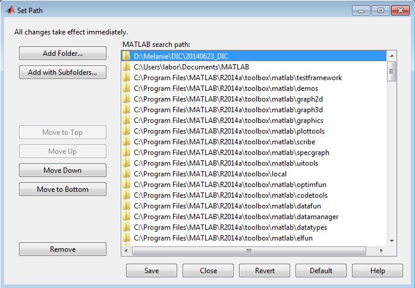

Installation
Requirements
This release has been developed and tested with MATLAB R2014a under Windows 7 Pro. You will need the following toolboxes:
- Optimization (for curve fitting processes)
- Image Processing (obviously)
- Parallel Computing (optional, if you want to use multicores).
Installation step 1
Extract the files from the zip file that you just downloaded into your DIC work folder (e.g. in Windows: C:\DIC):
- DIC.m
main program to start
- GenerateGrid.m
generate a grid raster of markers (gridx.dat, gridy.dat) that is needed for calculating correlations
- GeneratFileList.m
generate an image sequence (filenamelist.mat) with associated file names and creates a list of time stamps that is needed for merging stress and strain
- GenerateFilterList.m
generate a list of filters (CustomFilter.cfg) by choosing and testing from a list of available filters
- CustomFilter.cfg
list of (noise) filters that is applied before the correlation calculation starts (e.g. median, mean)
- CheckImageQuality.m
give user feedback regarding image quality (contrast, noise) before running DIC analysis
- AverageImageStack.m
combine multiple images and average before running DIC analysis
- ProcessCorrelations.m
main script for correlation calculation, calls sub script 'CalculateCorrelations.m' for different configurations:
small / large displacements, filtering, full analysis / resume previous analysis, single / multiprocessing
- CalculateCorrelations.m
sub script for correlation calculation using 'cpcorr.m'
- DisplacementAnalysis.m
analyze displacements with graphical user interface
- SelectMarkers.m
select markers from different grid types
- CleanMarkers.m
remove markers by user selection
- CorrectMarkers.m
correct marker positions by reference grids with defined positions
- StrainAnalysis.m
analyze strains (average strain 1D, local strain 1D, full strain 2D, strain between 2 points 1D)
- CalculateStress.m
calculate stress for homogeneous, isotropic material
- FitStrainOverDepth.m
fit strain over depth of processing time steps
- PropertyAnalysisDuctile.m
analyze properties of ductile materials (e.g. Young's Modulus)
- PropertyAnalysisBrittle.m
analyze properties of brittle materials (e.g. Young's Modulus)
- CreateCalibration.m
create calibration based on selected input data
- ApplyCalibration.m
apply calibration to selected output data
- LabelPeaks.m
detect peaks automatically by 'bwlabel.m' within a user provided region of interest
- PickPeaks.m
detect peaks manually (one by one) by user selection within region of interest
- PickPeaksLine.m
detect peaks manually (one by one) by user selection along a line
- RTCorrelationSimple.m
"real-time" correlation code (calculate correlation for each saved image)
- PlotMarkers.m
show images with marker positions
- PlotImageGridSubset.m
visualize CORRSIZE (half of correlation subset window size) in the context of the image with its grid
- EvalRR.m
evaluate results according to round robin test procedure
Add your DIC work folder to the MATLAB path ('Set Path'):

Now the *.m files are registered in the MATLAB system and can be called from any location.
Installation step 2
You will need to edit the files 'pcorr.m' and 'findpeak.m'. Sometimes you have to change the property settings (remove write protection) so you can save it as a normal user. You can also start MATLAB as an administrator, edit the files and log back in as a user.
In 'cpcorr.m' (type 'open cpcorr at the MATLAB prompt) you have to change:
- line 75:
from
CORRSIZE = 5;
to
CORRSIZE = 15;
This changes the size of the image part that is selected for correlation from 10x10 to 30x30 pixels. Change this to a smaller value if you experience slow computational speed or if you use low resolution images. Remember that markers need more than double the space from their center to the edge of the image, otherwise they cannot be tracked.
- line 133 and 134:
from
moving_fractional_offset = xymoving(icp,:) - round(xymoving(icp,:));
fixed_fractional_offset = xyfixed_in(icp,:) - round(xyfixed_in(icp,:));
to
moving_fractional_offset = xymoving(icp,:) - round(xymoving(icp,:)*1000)/1000;
fixed_fractional_offset = xyfixed_in(icp,:) - round(xyfixed_in(icp,:)*1000)/1000;
This changes the resolution of the marker positions to 1/1000th pixel. If you need higher resolution, just increase these values.
In 'findpeak.m' (which you will find in the private functions section of the Image Processing toolbox folder), you have to change:
- line 58 and 59:
from
x_offset = round(10*x_offset)/10;
y_offset = round(10*y_offset)/10;
to
x_offset = round(1000*x_offset)/1000;
y_offset = round(1000*y_offset)/1000;
The easiest way to get there is to find the function call of 'findpeak.m' in 'cpcorr.m' in line 114, right click it and go to 'Open selection'.